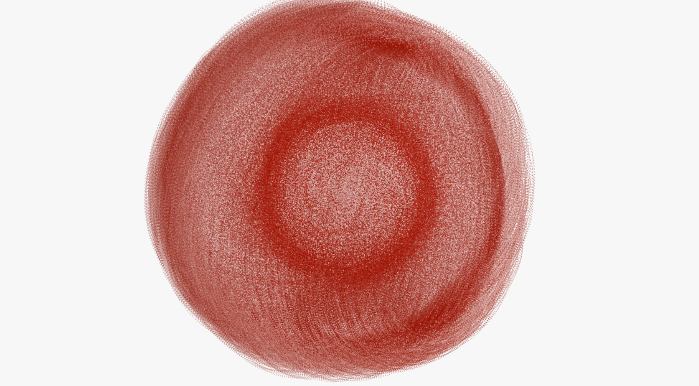

A human forgets its first walk
Unit 33321, a memory under the sun

An online sound map in seven memories.
A yellow path crosses a city map. It is the route of Unit 33321, a cyborg sent on its first walk to collect sensory data. At seven points along the way, visitors open its memories: a video, an audio log and a written report of what it met.
The reports begin as measurements, pH levels and flow rates, and slowly give way to wonder. The unit does not only record the world; it starts to value it. Its mission log calls this, with some alarm, “reverence protocols.”
The seven memories: Water, Wind, Light, Texture, Living, Voices, Self. The mission log tells the story of the walk.